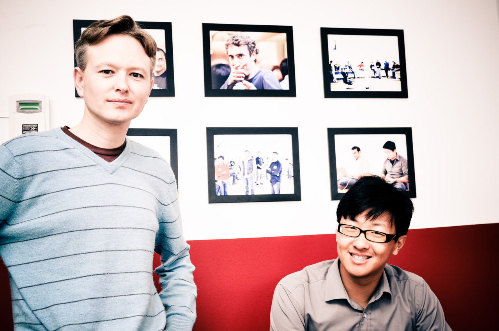

Editor’s note: The following is a guest post by Jon Paris, CEO and co-founder of Astrid To-Do. Astrid participated in AngelPad and immediately raised a successful seed round from Google Ventures and other investors. His…